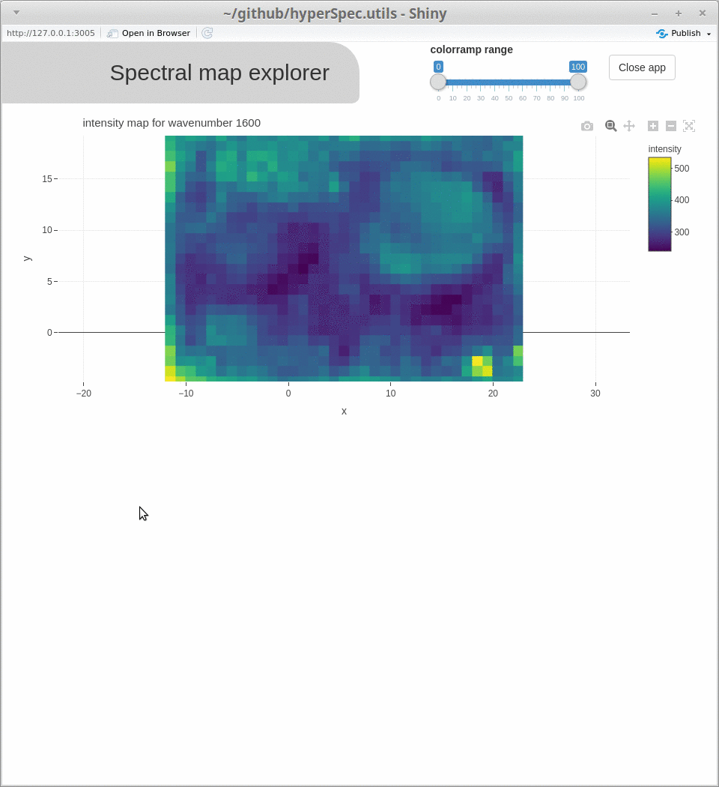

This R package is a collection of utility functions to work with objects of the class hyperSpec as defined by the package {hyperSpec}. While it is independent from the popular {hyperSpec} package (written by Claudia Beleites), {hyperSpec.utils} intends to add some convenient shortcuts for data analysis, some more conversion, import and export functions, tools for interactive data exploration, as well as some extended functionality (such as cosmic ray removal). The package can be considered as work in progress and substantial (also backwards incompatible) changes are to be expected.
Installation
You can install hyperSpec.utils from github with:
Use the argument dependencies = TRUE to also install suggested dependencies, mainly needed for the function spcmap_explorer(), as well as individual plotting, import/export and conversion functions.
What is yet to come?
Multiple additional functions are currently planned and ideas are added to the issues section with an  label attached.
label attached.
If you have more ideas for useful functions, please open an issue with appropriate tag, or, even better, open a pull request to propose your ideas on a possible implementation.
What is included?
The package will get continuously extended and currently holds functions
- being convenient shortcuts for already existing functionality (e.g. for normalization
minmax_normalization(),snv_normalization(),vector_normalization),area_normalization()andband_normalization(), for band aggregation resp. integrationaggregate_wl(), for plotting with the viridis color scaleplotmap_viridis()) - introducing new functionality (
crr()for cosmic ray removal as defined in and provided with this publication by Whitaker and Hayes 2018, a S4 method fordiff()or extending the test functions of{hyperSpec}by the simpleis.hyperSpec()andis.hyperSpecMap()for consistency with the respective{base}functions, returning a logical value in all cases) - for extended import and export (export to Witec ASCII graph format with
write.txt.Witec.Graph()or to JCAMP-DX withwrite_jdx(), import of OPUS binary files withread_opus()) - with focus on spatially resolved spectral data (spectral maps; such as
spcmap2array()to get an array of the spectral hypercube,spcmap_dim(),is_hyperSpecMap()as well as most visualization functions) - for interactive visualization (e.g.
spcmap_explorer(), which is demonstrated below, andcubeview())

Acknowledgments
|
This package was developed at the BIONAMI (biological materials at the nano and micro scale) group at the University of Natural Resources and Life Sciences, Vienna, Institute for Biophysics, with funding from the European community (ERC-consolidator grant SCATAPNUT 681885). |